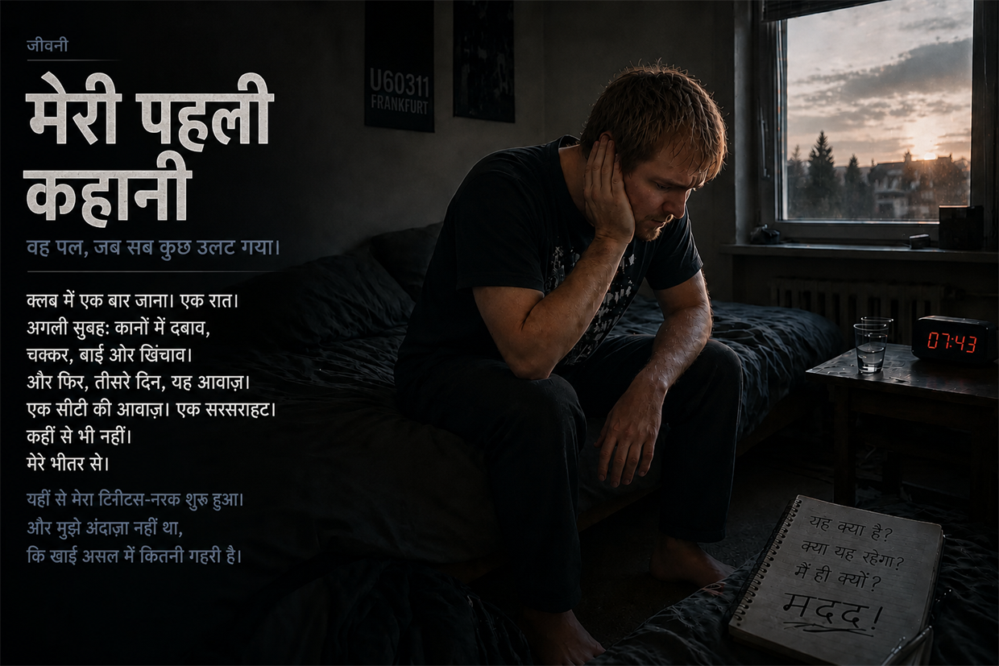
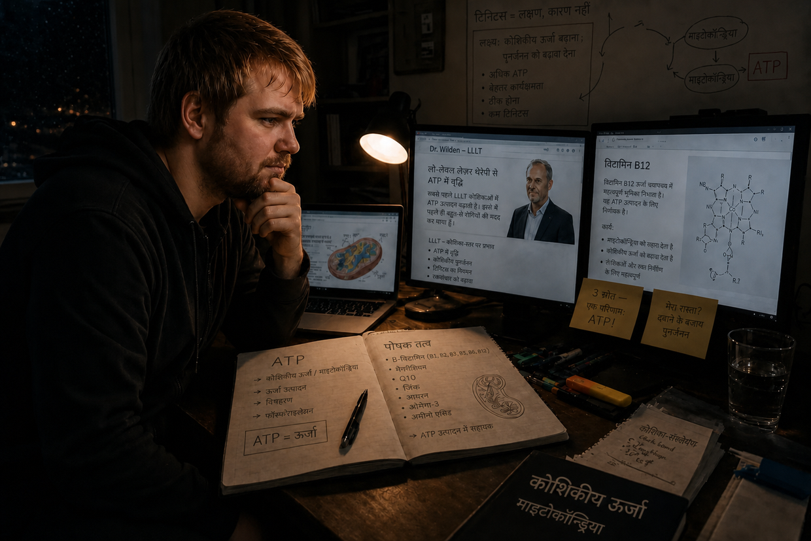
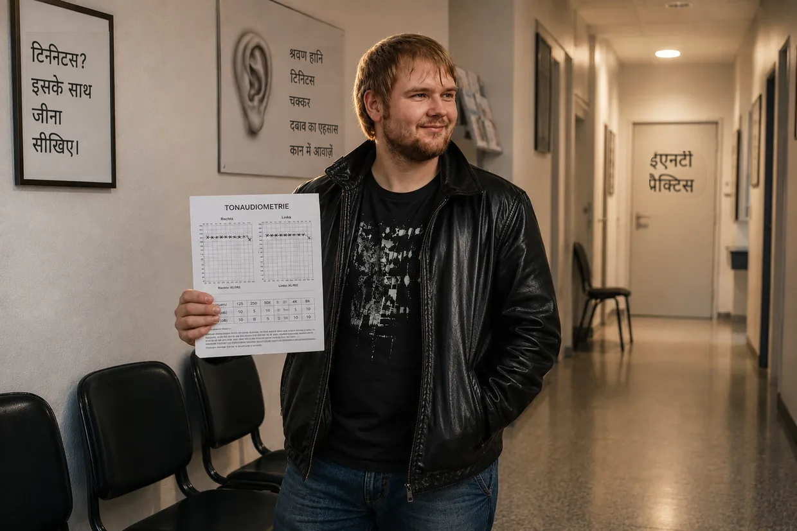

टिनिटस के नर्क में जाने का मेरा रास्ता — भाग 1: नर्क की यात्रा
नमस्ते, मेरा नाम Dustin Müller है। पहले खुद इससे पीड़ित रह चुका हूँ — और वह भी कई बार — इसलिए यह वेबसाइट लिखना मेरे लिए एक बड़ी ज़रूरत थी: अपनी रिसर्च और अपने अनुभवों से दूसरे पीड़ित लोगों को दिखाना कि मैं पूरी तरह ठीक होने तक कैसे पहुँचा। लेकिन अपने कानों में क्या हुआ, यह समझाने से पहले मुझे बताना होगा कि मेरे साथ यह सब आखिर शुरू कैसे हुआ।
पहले एक बात: यह सब अब 14 साल से भी ज़्यादा पुराना है। ज़्यादातर दृश्य मुझे ऐसे याद हैं जैसे कल ही की बात हो — कुछ बारीकियों में थोड़ा गड़बड़ा सकता हूँ। यह बात समझ में आनी चाहिए।
क्या आप संक्षिप्त संस्करण ढूँढ रहे हैं? यह लंबा संस्करण हर बारीकी में जाता है — ऑडियोग्राम, ईएनटी डॉक्टर के पास की मुलाकातें और एक-एक निर्णायक सफलता। अगर आप इसे अधिक संक्षिप्त रूप में चाहते हैं, तो संक्षिप्त कहानी सही जगह है।
2011 की शरद ऋतु: पहली डिस्को
23 साल की उम्र में ऊर्जा का कोई अंत नहीं होता और लगता है कि शरीर सब कुछ झेल लेगा। अपने कानों के मामले में भी मेरी यही सोच थी। मुझे संगीत से प्यार था। सालों तक मैं हेडफ़ोन पर संगीत इतनी तेज़ आवाज़ में सुनता था कि मेरे माता-पिता उसे बंद कमरे के दरवाज़े के पार सुन सकते थे। मुझे पता भी नहीं था कि मेरा सिस्टम पहले ही “गलकर नरम” पड़ चुका था।
शुरुआत मेरे कज़िन से हुई। मैं पहले कभी डिस्को नहीं गया था, और उसने कहा: इस बार साथ चलो, फ़्रैंकफ़र्ट के U60311 में — “वहाँ दूसरी डिस्को जैसी भीड़ नहीं होती, बड़ा मज़ा आता है।” वैसे मैं उसके साथ निजी तौर पर पार्टी करना बहुत पसंद करता था, इसलिए थोड़ा झिझकने के बाद मान गया। नीचे जाती सीढ़ियों पर ही — हॉल अभी पक्का 40 मीटर दूर रहा होगा — बेस ज़ोर से महसूस हो रहा था। फिर भी: मैं खुश था। अपनी नादानी में मैं अंदर सबसे अच्छी खाली जगह पर जा खड़ा हुआ — स्पीकरों के सामने, बमुश्किल छह से आठ मीटर की दूरी पर, बायाँ कान ठीक आवाज़ के स्रोत की ओर। करीब चार घंटे। ठीक यही वह बिंदु था जहाँ मेरा पहला टिनिटस पैदा हुआ।
अगली सुबह: बाईं ओर झुकाव
ऊपर निकलने वाली सीढ़ियों पर, बाहर जाते समय ही मुझे एहसास हुआ कि मेरे कानों पर कितना ज़बरदस्त दबाव था — बाईं ओर दाईं से ज़्यादा। सब कुछ दबा-दबा सुनाई दे रहा था, जैसे पानी के नीचे, और कुछ आवाज़ों से हल्का दर्द हो रहा था। काफ़ी उलझन में मैंने अपने कज़िन से पूछा कि क्या उसे भी यह दबाव है। “हाँ, कोई बड़ी बात नहीं, फिर चला जाएगा।” इसलिए मैंने इस पर और कुछ नहीं सोचा, हम ट्रेन से घर गए और मैं सोने के लिए लेट गया — मन में यही था: कल यह काफ़ी बेहतर होगा।
अगली सुबह शराब के असर वाले एक उलझे हुए सपने से मैं चौंककर जागा — और संतुलन बुरी तरह बिगड़ने से सीधे वापस तकिए पर गिर पड़ा। खुद को सँभालने के लिए मैं कुछ मिनट लेटा रहा। दूसरी कोशिश में, बहुत धीरे-धीरे, मुझे पता चला कि मैं बाईं ओर कितना ज़ोर से झुक रहा था: सिर सीधा रखना मुश्किल था, बिना बाईं ओर आगे को ढुलके उठना लगभग नामुमकिन। आखिरकार उठ पाया और दिन काटा — खुद को झुकने से रोकते हुए। दबाव अभी था, लेकिन सिर्फ़ बाईं ओर, और रात से काफ़ी कम।
मैं उन लोगों में हूँ जिन्हें अपने शरीर पर बहुत भरोसा होता है। इसलिए मैंने ज़्यादा चिंता नहीं की: समय इसे संभाल ही लेगा। और ऐसा ही लग रहा था — बाईं ओर झुकाव कम हुआ, दबाव लगभग गायब हो गया। मैंने राहत की साँस ली।
दिन 3: यह मेरे भीतर से आ रहा है
डिस्को के बाद दिन 3। मैं जागा और अचानक रेफ़्रिजरेटर की बीप जैसी आवाज़ सुनी। ये आखिर क्या बला है? मैंने अपना सिर दीवार से लगाया। बिजली के सॉकेट पर कान लगाकर सुना। कंप्यूटर और अलार्म घड़ी जाँची। कुछ नहीं। फिर मैंने अपने हाथों से कान ढक लिए।
ओह, शिट। यह मेरे भीतर से आ रहा है। यह मेरे सिर में है।
मैं मिनटों तक सदमे में खड़ा रहा। यह क्या है? क्या अब यह बना रहेगा? बाएँ कान में गहरी गुनगुनाहट, सरसराहट, सायरन की आवाज़ें और तेज़ बीप। दाएँ कान में भी मैं उस समय पहले से एक हल्की बीप सुन रहा था। सदमे के बावजूद मैंने सोचा: यह फिर चला जाएगा।
14 दिन की समय-सीमा
मैंने वही किया जो शायद इस स्थिति में हर कोई करता है: अपने उस ईएनटी डॉक्टर से अपॉइंटमेंट लिया जिसे मैं बचपन से जानता था — और तब तक इंटरनेट खँगालना शुरू किया। पहले यह दबाव क्यों, चक्कर क्यों, और अब ये आवाज़ें क्यों, जो बंद ही नहीं होतीं? कुछ ही मिनटों में मुझे जवाब मिल गए: अचानक सुनने की क्षमता घटना और भीतरी कान की क्षति। सुनने की क्षमता में स्थायी कमी, अक्सर कानों में आवाज़ें। और फिर वह वाक्य, जिसने मेरी रगों में ख़ून जमा दिया: “14 दिनों के भीतर इसका इलाज होना ज़रूरी है — वरना यह सब क्रॉनिक हो जाता है और ज़िंदगी भर साथ रहता है।” tinnitus.de फ़ोरम पर मैंने ऐसे लोगों के थ्रेड पढ़े जो पाँच साल से इस चीज़ के साथ जी रहे थे। पाँच साल? होली शिट!
अपॉइंटमेंट में बस कुछ दिन बाकी थे। इसलिए मैंने खुद को हौसला दिया और इंतज़ार में डटा रहा।
ईएनटी नंबर 1: “उस पर ध्यान मत दीजिए”
जब आख़िरकार मुझे इलाज वाले कमरे में जाने दिया गया, तो मुझे सचमुच राहत महसूस हुई: उम्मीद, अब बस सब ठीक हो जाएगा। मैंने थोड़े शब्दों में डिस्को जाने और उसके बाद से मुझे परेशान कर रही चीज़ों के बारे में बताया। उन्होंने सुना, पहले कुछ नहीं कहा और अपने उपकरणों से मेरे कानों में देखा। मैंने पूछा: अब मुझे क्या करना चाहिए, वहाँ हुआ क्या है? वह पहले ही थोड़ा झुँझला चुके थे: “हाँऽ, उस पर ध्यान मत दीजिए। आवाज़ों को ढकने के लिए थोड़ा संगीत सुनिए।” मैं: “लेकिन 14 दिनों के भीतर इलाज होना ज़रूरी है, है न? और कानों पर और आवाज़ डालना क्या सच में समझदारी है?” वह: “अभी पहले हम ऑडियोमेट्री करेंगे।” इतना कहा और कमरे से निकल गए।
हक्का-बक्का मैं उन्हें जाते देखता रहा और सोचने लगा कि शायद किसी दूसरे डॉक्टर को ज़्यादा जानकारी हो। यह ख़याल पूरा भी नहीं हुआ था कि असिस्टेंट ने पुकारा: साथ आइए, ऑडियोमेट्री के लिए।
ऑडियोमेट्री: ख़ामोशी में ही पता चलता है
ध्वनिरोधी केबिन में घुसने पर ही मुझे एहसास हुआ कि मेरी सुनने की क्षमता को हुई क्षति वास्तव में कितनी गंभीर थी। कमरा बाहर से पूरी तरह अलग-थलग था — और उस ख़ामोशी में मुझे अपने कानों की एक-एक आवाज़ सुनाई दे रही थी, अविश्वसनीय रूप से तेज़। जाँच के तीन हिस्से थे: पहले मेरे टिनिटस की फ़्रीक्वेंसी और आवाज़ की तीव्रता तय करना, फिर सामान्य सुनने की क्षमता, और आख़िर में खोपड़ी पर अस्थि-चालन — इसके लिए हेडफ़ोन कानों के नीचे या ऊपर लगा था, इतना ठीक-ठीक अब याद नहीं। उसके बाद: वापस प्रतीक्षालय में।
फ़ैसला: “इसके साथ जीना सीखिए”
थोड़ी देर बाद उन्होंने मुझे फिर अंदर बुलाया, और इस बार बातचीत लंबी चली। रिपोर्ट हाथ में लेकर उन्होंने गंभीर, दृढ़ लहजे में समझाया कि डिस्को जाकर मैंने अपनी सुनने की क्षमता को स्थायी रूप से थोड़ा नुकसान पहुँचा लिया है और इसके बारे में कुछ नहीं किया जा सकता।
एक पल के लिए मैं सचमुच कुछ बोल ही नहीं पाया। इस बीच उन्होंने फिर मेरे कानों की जाँच की। हल्का काँपते हुए मैंने पूछा कि क्या इसे फिर ठीक करने की कोई भी गुंजाइश नहीं है। फिर थोड़ा झुँझलाकर: “आपको इसके साथ जीना सीखना होगा। ध्यान मत दीजिए, ध्यान बँटाइए, हेडफ़ोन लगाइए।” मेरे इस सवाल पर — जो पीछे मुड़कर देखूँ तो बेतुका था — कि क्या मैं आगे भी डिस्को जा सकता हूँ: “हाँ, उससे कोई समस्या नहीं होती।” इतना कहकर उन्होंने विदा ली और कमरे से निकल गए।
कसम
स्तब्ध और काफ़ी टूटे हुए मन से मैं रिपोर्टें हाथ में लिए क्लिनिक से निकला। घर लौटते समय मेरे दिमाग़ में बस एक ही बात थी: इसके साथ मैं किसी भी हालत में अपनी पूरी ज़िंदगी नहीं गुज़ारूँगा। मैंने खुद से कसम खाई: टिनिटस को दूर करने के लिए जो कुछ भी मुमकिन है, सब आज़माऊँगा — वरना मैं और जीना नहीं चाहता। (यह सचमुच पूरी संजीदगी से कही बात से ज़्यादा यूँ ही कही हुई बात थी। फिर भी: हालत बहुत निराशाजनक थी।)
घर पहुँचते ही उम्मीद की एक नई लहर आई। मैं बस यह मान ही नहीं सकता था कि जर्मनी में कोई डॉक्टर नहीं जानता कि टिनिटस क्या है और उसका इलाज कैसे किया जाता है। इसलिए मैं सीधे फिर पीसी पर बैठा और दूसरे ईएनटी क्लिनिकों को लिखता रहा, जब तक जल्द का एक अपॉइंटमेंट नहीं मिल गया।
या तो टिनिटस जाएगा, या मैं जाऊँगा। मैं इस चीज़ को अपनी ज़िंदगी पर हावी नहीं होने दूँगा। मुझे खुद देखना होगा कि क्या किया जा सकता है।”
इंटरनेट पर क्या-क्या था

अगले अपॉइंटमेंट तक के उन कुछ दिनों में मैंने पहली बार ठीक से जानकारी जुटाई — और जानकारी की ऐसी भारी भरमार मिली कि सँभालना मुश्किल था: टिनिटस से कैसे निपटा जाए, किससे मदद मिलने की बात कही जाती है, और दावों के मुताबिक टिनिटस आख़िर है क्या:
- कोर्टिसोन और जिन्कगो: सूजन कम करना, रक्त-संचार बढ़ाना, ताकि सुनने की क्षमता सँभल सके — बात समझ में आती थी।
- जबड़ा और गर्दन (CMD/HWS): कहा जाता था कि मांसपेशियों का तनाव इन आवाज़ों को पैदा करता है। मैं खुद महसूस करता था कि जबड़े और सिर को हिलाकर उस आवाज़ पर साफ़ असर डाल सकता हूँ — लेकिन यह चीज़ मुझे डिस्को में लगी थी। कोई मांसपेशी इसे बनाए रखती है, इस बात पर मुझे तब भी कुछ ख़ास भरोसा नहीं था।
- TRT और मास्किंग: दूसरी आवाज़ों से ढक देना। यह बात मैं समझ सकता था: डॉक्टर की सलाह पर मैं संगीत सुनना जारी रखे हुए था, और इससे उस आवाज़ को अच्छी तरह ढका जा सकता था, कभी-कभी साफ़ तौर पर कम भी किया जा सकता था — बस कुछ देर बाद वह हर बार लौट आती थी। और फिर पहले से ज़्यादा आक्रामक और तेज़। क्यों, यह तब मेरे लिए एक बड़ा रहस्य था।
- पोषक सप्लीमेंट्स: उन पर मैं हँसता था। मेरा कज़िन — वही, जिसके साथ मैं डिस्को गया था — तब ऐसा एक A-से-Z वाला सप्लीमेंट लेता था, और मैं माँ के सामने उसकी बुराई करता था: कोई इसके झाँसे में कैसे आ सकता है और इस पर पैसे कैसे उड़ा सकता है? शरीर को इसकी ज़रूरत नहीं, हमें यह सब खाने से मिल जाता है। उसने मुझे भी कुछ लेने की पेशकश की। मैंने बस सोचा: यह सब लेकर मेरे पीछे मत पड़ो। मैंने कभी सपने में भी नहीं सोचा होता कि सालों बाद ठीक इसी रास्ते मैं अपने टिनिटस से छुटकारा पाऊँगा।
ईएनटी नंबर 2: जिन्कगो और एक अधूरा वाक्य
दूसरे अपॉइंटमेंट की सुबह टिनिटस अचानक साफ़ तौर पर तेज़ हो गया था — दाईं ओर की हल्की बीप भी। मुझे समझ नहीं आया कि क्यों। (बाद में मैं इसकी वजह समझ पाया: संगीत और रात में सफ़ेद शोर सुनना, सब डॉक्टर की सलाह पर।) पहले से भी ज़्यादा दबे मन से मैं निकल पड़ा।
यह ईएनटी डॉक्टर सचमुच मिलनसार और हौसला बढ़ाने वाले थे। उन्होंने कहा कि टिनिटस अभी काफ़ी नया है, समय के साथ पक्का फिर चला जाएगा। उन्होंने जिन्कगो लिखा, पर्याप्त नींद और रक्त-संचार के लिए शारीरिक गतिविधि की सलाह दी। मैंने अपने सवाल पूछे। हेडफ़ोन? “ध्यान बँटाने के लिए तो यह फ़ायदेमंद भी है।” डिस्को? इस पर मैं हैरान हुआ: उन्होंने कहा कि पहले कुछ हफ़्ते उनसे दूर रहूँ। और वे तीन महीने, जिनके बाद टिनिटस को क्रॉनिक कहा जाता है? “पहले देखते हैं कि अगले कुछ हफ़्तों में आपका हाल कैसा रहता है।” मैं: “लेकिन क्या उसके बाद वह सचमुच ठीक नहीं हो सकता?” वह, थोड़ा अचकचाकर: “उसकी भरपाई करना भी सीखा जा सकता है — यानी उसे अपनी चेतना से पूरी तरह बाहर रखना।”
वही अधूरा वाक्य फिर आ गया था।
कई हफ़्ते बीत गए
इसी तरह अगले दिन और हफ़्ते बीते, इस उम्मीद में कि इंतज़ार, जिन्कगो और डॉक्टर की सलाह से टिनिटस कम होगा — या पूरी तरह चला जाएगा। आवाज़ कभी कम होती, कभी ज़्यादा। दिन में स्कूल से मेरा ध्यान अच्छी तरह बँटा रहता था। शाम को सो जाने तक मैं उसे हेडफ़ोन पर संगीत और YouTube के सफ़ेद शोर से ढकता था — झरने, पूरी शाम। इस तरह कुछ हद तक सहा जा सकता था। मुझे ऐसा लगता था।
दूसरी बार अचानक सुनने की क्षमता घटना: सिर में आधी कलाबाज़ी
कुछ हफ़्तों बाद, एक दिन, असलियत सामने आ गई। मैं जागा और बाएँ कान में फिर वही दबाव महसूस हुआ। मैंने खुद को समझाया कि अचानक सुनने की क्षमता घटने के बाद शायद यह सामान्य है, कभी-कभी फिर हो जाता होगा और इसका कोई मतलब नहीं — और स्कूल के लिए निकल गया। रास्ते में ही मुझे एहसास हुआ कि चक्कर आ रहा है और बाईं ओर झुकाव लौट आया है; अपनी लेन में रहना मुश्किल होने लगा। असल में लौट जाना समझदारी होती। लेकिन क्लास के पैसे लगते थे और मैं कुछ भी छोड़ना नहीं चाहता था।
और कार का रेडियो चल रहा था। बहुत तेज़। मेरे पसंदीदा गाने बज रहे थे, मैं पूरे जोश से उनमें डूबा था, कार में बेस का कंपन महसूस कर रहा था — बगल की गाड़ी के लोग इधर देख रहे थे। उस साले टिनिटस को छोड़ दें तो बहुत बढ़िया लग रहा था। पीछे मुड़कर देखूँ तो वह लगभग तीन-चौथाई डिस्को ही थी।
पहले पीरियड में शुरू हुआ: आवाज़ें विकृत सुनाई देने लगीं और सामान्य आवाज़ों से अचानक दर्द होने लगा — हाइपरएक्यूसिस। मैंने पढ़ाई पर ध्यान देने और इस सबको अनदेखा करने की कोशिश की। यह जैसे-तैसे ही हो पा रहा था; सामने जो कहा जा रहा था, वह मुझे मुश्किल से समझ आ रहा था। अगले कुछ घंटों में बाएँ कान का दबाव बढ़ता ही गया। बेचैन था, लेकिन किसी को ज़ाहिर नहीं होने दिया और बैठकर सहता रहा — जब तक अचानक मेरे सामने का दृश्य ऊपर-नीचे की दिशा में घूमने नहीं लगा। जैसे सिर के अंदर आधी कलाबाज़ी।
यह बस कुछ सेकंड चला। फिर दृश्य सामान्य हो गया, लेकिन ज़ोरदार डगमगाहट वाले चक्कर, मेरा पुराना बाईं ओर झुकाव और बाएँ कान का दबा-दबा सुनना बना रहा। दहशत में मैं समझने की कोशिश कर रहा था कि मेरे अंदर अभी हो क्या रहा है — और सबसे बढ़कर यह कि मेरे आसपास किसी को कुछ पता न चले। शर्म के मारे। मैं तुरंत बाहर निकलना चाहता था, घर जाना चाहता था, लेकिन किसी का ध्यान अपनी ओर भी बिल्कुल नहीं खींचना चाहता था। इसलिए बैठा रहा। भगवान का शुक्र था कि ब्रेक में अब ज़्यादा देर नहीं थी। घंटी बजते ही मैंने झट से बैग उठाया और वहाँ से खिसक लिया।
घर की ओर गाड़ी चलाना लापरवाही थी: चक्कर की वजह से मुझे हर कुछ सेकंड में उलटी ओर स्टीयरिंग मोड़कर गाड़ी सँभालनी पड़ रही थी। लेकिन मुझे बस घर पहुँचना था और रास्ता छोटा था। पीछे मुड़कर देखूँ तो यह सबसे तनावपूर्ण स्थितियों में से एक थी — शरीर पूरी तरह बेकाबू हो रहा था, और ऊपर से यह डर कि कोई मेरी दहशत देख लेगा।
ईएनटी नंबर 3: “फिर से अचानक सुनने की क्षमता घटना” — और एक पेशकश
घर पहुँचते ही इस बार मैंने देर नहीं की और उसी दिन अपॉइंटमेंट तय कर लिया — ईएनटी नंबर 3, बहुत जल्द का। मैंने उन्हें बताया कि क्लास में क्या हुआ था। उन्होंने सुना, लेकिन पहले कोई फ़ैसला नहीं सुनाया; मुझे सुनने की जाँच के लिए भेजा और — क्योंकि मैंने बंद नाक का ज़िक्र किया था — सूँघने की जाँच के लिए भी। फिर “सौम्य स्थितिजन्य चक्कर” की जाँच: सिर को कुछ ख़ास स्थितियों में रखना। इससे बिल्कुल कुछ नहीं बदला। वह कमरे से निकल गए और बोले कि उनकी एक महिला सहकर्मी मुझे अभी फिर बुलाएगी।
डॉक्टर ने चिंतित, लेकिन भरोसे भरे लहजे में कहा कि मेरी सुनने की क्षमता फिर अचानक घटी है — बहुत संभावना है कि अगले 14 दिनों में यह अपने आप सँभल जाएगी। और चूँकि सूँघने की जाँच से पता चला था कि मैं आम आदमी से कम सूँघ पाता हूँ, टिनिटस बंद साइनस से भी आ सकता है। दोबारा अचानक सुनने की क्षमता घटना सुनकर मुझे झटका लगा; बाकी बातों से तो लगभग फिर हौसला मिलने लगा था। तभी उन्होंने बिल्कुल अप्रत्याशित रूप से जोड़ा: “देखिए, ऐसी चीज़ों में बहुत लोग डिप्रेशन में चले जाते हैं। अगर तकलीफ़ें बनी रहीं, तो मैं आपको खुशी से एंटीडिप्रेसेंट लिख सकती हूँ।”
मैं बैठा सोच रहा था कि क्या मैंने सही सुना। मेरा संतुलन ढह गया था — और उसका हल मनोचिकित्सकीय दवाएँ होनी थीं? क्लिनिक से निकलते समय मेरे दिमाग़ में बस यही था: प्लीज़, हे भगवान, इन 14 दिनों में ये सारे लक्षण मिटा दो। मैं इनके साथ नहीं जीना चाहता था, और मनोचिकित्सकीय दवाएँ तो बिल्कुल नहीं चाहता था।
ईएनटी नंबर 4: विशेषज्ञ और “सब दिमाग़ में है”
घर पर मैं सोचता रहा कि और क्या कर सकता हूँ — तभी मुझे कोर्टिसोन थेरेपी फिर याद आई, जिसके बारे में इंटरनेट पर पढ़ा था। अब तक किसी डॉक्टर ने उसका ज़िक्र तक नहीं किया था। इसलिए इस बार मैंने ख़ास तौर पर ऐसा ईएनटी डॉक्टर खोजा जो अचानक सुनने की क्षमता घटने और टिनिटस का विशेषज्ञ हो। अपॉइंटमेंट के लिए इंतज़ार करना पड़ा।
डगमगाहट वाले चक्कर, संतुलन की गड़बड़ी, विकृत सुनना, आवाज़ों के प्रति अतिसंवेदनशीलता, कान का दबाव और ज़ाहिर है टिनिटस — सब जस के तस रहे, इसलिए मैंने फ़िलहाल स्कूल जाना रोक दिया। और दिन का एक बड़ा हिस्सा tinnitus.de फ़ोरम पर बिताने लगा। वहाँ मैंने देखा कि बहुत-से लोगों को टिनिटस ठीक मेरी तरह हुआ था — डिस्को, तेज़ संगीत, धमाके से सुनने को पहुँची क्षति। और मैंने पढ़ा कि दूसरे क्या-क्या आज़मा चुके थे: हाइपरबेरिक ऑक्सीजन थेरेपी (फ़ोरम में राय ज़्यादातर नकारात्मक — जल्दी ही फिर नज़रअंदाज़ कर दी), TRT उपकरण (कहा जा रहा था कि बस थोड़े समय का फ़ायदा, लंबे समय में अक्सर और बुरा, और स्वास्थ्य बीमा भी खर्च नहीं उठाता — अपनी सूची से काट दिया), यहाँ तक कि इम्प्लांट वाली सर्जरी (मेरे लिए सिर्फ़ आख़िरी आपात विकल्प — सूची में बहुत पीछे)। कोर्टिसोन थेरेपी के बारे में हर तरफ़ यही था: कोई फ़ायदा नहीं। मैंने यह बात ध्यान में रखी। लेकिन उस समय डॉक्टरों पर मेरा भरोसा अब भी बहुत गहरा था और मैं ज़िंदगी भर यह पछताना नहीं चाहता था कि एक बहुत सराहे गए विकल्प को आज़माया ही नहीं।
फिर अपॉइंटमेंट आया। ईएनटी नंबर 4। सबके बावजूद मुझे फिर बहुत उम्मीद थी: एक विशेषज्ञ, और कोर्टिसोन थेरेपी अब भी एक विकल्प थी। पहले वह ऑडियोमेट्री करना चाहते थे — जब मैंने कहा कि दो बार हो चुकी है, तो स्वास्थ्य बीमा की वजह से रहने दिया। इसलिए मैंने बताया। डिस्को, दूसरे ईएनटी डॉक्टर, स्कूल, कलाबाज़ी, सब कुछ, एक लंबे, एकसुरे बयान में। उन्होंने बिना टोके सुना। और फिर, इनमें से किसी भी बात पर कुछ कहने के बजाय: “क्या आपने कभी संज्ञानात्मक व्यवहार थेरेपी के बारे में सुना है?”
मैं: “नहीं, ठीक से नहीं। इसका क्या मतलब है?”
वह: “आपकी समस्या मुख्य रूप से यह है कि आप अपनी सुनने की समस्याओं पर बहुत ज़्यादा ध्यान देते हैं। इससे आप टिनिटस को बनाए रखते हैं और बढ़ाते हैं।”
मैं: “ओह, यह दिलचस्प है … अच्छा, इसलिए बार-बार कहा जाता है कि ध्यान बँटाना चाहिए।”
वह: “नवीनतम शोध के अनुसार क्रॉनिक टिनिटस मुख्य रूप से दिमाग़ का इन आवाज़ों पर बहुत ज़्यादा केंद्रित होना है।”
मैं: “लेकिन यह आवाज़ तो डिस्को जाने से पैदा हुई थी, अचानक सुनने की क्षमता घटने से, उस नुकसान से …”
कोर्टिसोन के सवाल पर उन्होंने कहा कि उसका मतलब सिर्फ़ पहले 14 दिनों में है। मेरे मामले में फैंटम आवाज़ मानकर चलना होगा — दिमाग़ खोई हुई फ़्रीक्वेंसी की भरपाई करने की कोशिश करता है और खुद एक आवाज़ पैदा करता है; मैं जितना उस पर ध्यान दूँगा, वह उतनी ही तेज़ और लंबे समय तक बनी रहने वाली होगी। फिर TRT की बात, बहुत आशाजनक। मैंने कहा कि दूसरी आवाज़ों से उसे ढकना तो कब का आज़मा चुका हूँ और लंबे समय में उससे मेरा टिनिटस बस और बिगड़ा था। वह उठ खड़े हुए: उन्होंने कहा कि इसके लिए मुझे ख़ास उपकरण इस्तेमाल करने होंगे, और लंबे समय तक। हाथ मिलाया, विदा ली।
फ़ोरम की पोस्ट: एक लेज़र, रेगेन्सबुर्ग का एक डॉक्टर — और मेरी सूची
इस बार मैं सचमुच हताश था। कोर्टिसोन थेरेपी — मेरी नज़र में सबसे आशाजनक संभावना — अब बाहर थी, और एक “टिनिटस विशेषज्ञ” ने अभी मुझे समझाया था कि मेरा दिमाग़ खुद आवाज़ें पैदा कर रहा है। बस एक तसल्ली थी: तीन महीने अभी पूरे नहीं हुए थे। और फ़ोरम। वहाँ मैंने दिन बिताए। हफ़्ते।
कभी “अनुभवों के विवरण” वाले हिस्से के बिल्कुल पीछे के पन्नों पर मुझे “आप लोगों को सच में किससे मदद मिली” नाम का एक विषय मिला। पहली पोस्ट एक यूज़र की थी जो खुद को “Tinnitus-Patient” कहता था। उसने लिखा कि उसके लिए सिर्फ़ एक चीज़ कारगर हुई थी: लो-लेवल लेज़र थेरेपी नाम का इलाज। उससे उसका टिनिटस और कानों की बाकी सारी समस्याएँ पूरी तरह ठीक हो गई थीं। बाकी सब — ठीक वही चीज़ें जिनसे मैं भी गुज़र चुका था — उसके किसी काम नहीं आई थीं।
उस पोस्ट ने तब मुझे ज़ोर से झकझोर दिया था। लगा जैसे आधा इंटरनेट छान मारा हो — डॉक्टरों, क्लिनिकों, अध्ययनों, इलाज के किसी मान्य तरीके वाले पीड़ितों की तलाश में — और फिर कोई यूँ ही आता है और लिख देता है कि एक अजीबोग़रीब लेज़र थेरेपी से वह ठीक हो गया। तुरंत उम्मीद, राहत, ख़ुशी। और ठीक उसके पीछे ढेर सारा शक: नीचे की टिप्पणियों में उस तरीके की धज्जियाँ उड़ाई जा रही थीं। मैं दुविधा में था। आख़िरकार कोई तिनके का सहारा मिल जाता, तो कितना अच्छा होता।
मैंने गूगल पर खोजा: “लो लेवल लेज़र थेरेपी टिनिटस”, “LLLT”। और — TRT और बाकी सबकी तरह — ज़्यादातर बुरा ही मिला: ख़तरनाक, ढोंग। यह किसी क्लिनिक या “सामान्य” डॉक्टर के यहाँ नहीं, बल्कि सिर्फ़ रेगेन्सबुर्ग के एक Dr. Wilden के यहाँ उपलब्ध था। निजी प्रैक्टिस, स्वास्थ्य बीमा खर्च नहीं उठाता, बताया जाता था कि महँगा है। और इस तरह मैंने भारी मन से इस थेरेपी को भी अपनी सूची से काट दिया।
फ़िलहाल।
सबसे बुरा दौर: मेरा अपना जन्मदिन
दिन बीतते गए और कानों की हालत बिगड़ती गई। इतनी कि मुझे अपना ही जन्मदिन बीच में छोड़ना पड़ा — पहली बार अचानक सुनने की क्षमता घटने के करीब डेढ़ महीने बाद। हाइपरएक्यूसिस और विकृत सुनाई देना मुझे पागल कर रहे थे, और अक्सर मुझे समझ ही नहीं आता था कि मेरे दोस्त और रिश्तेदार क्या कह रहे हैं: टिनिटस उनकी बातों को ढक देता था, और कुछ अक्षर अचानक पहले से अलग सुनाई देते थे — “S” जैसे “F”, “T” जैसे “D”। मुझसे और नहीं सहा गया और मैं घर लौट गया।
चक्कर भी लगातार बदतर होते गए, कभी-कभी इतने कि मैं संतुलन खो बैठता था और गिर पड़ने का ख़तरा होता था। (बाद में पता चला: मेनिएर रोग।)
तो वहीं बैठा था मैं। न स्कूल, न कोई आगे बढ़ना। अकेला, कटा हुआ — शोर से, दोस्तों से, ज़िंदगी से। डॉक्टरों ने मुझे छोड़ दिया था और मेरे सिर में यह भर दिया था कि मेरा दिमाग़ गड़बड़ा गया है और मुझे एंटीडिप्रेसेंट चाहिए।
लेकिन अगले कुछ दिनों में एक सचमुच निर्णायक अनुभव भी हुआ।
पहला निर्णायक अनुभव: यूनिवर्सिटी अस्पताल में सक्शन उपकरण
मानो मेरे पास पहले ही कम मुसीबतें थीं, एक और आ गई: कान की नली में ज़बरदस्त सूजन। यहाँ बता दूँ कि मुझे बचपन से न्यूरोडर्मेटाइटिस और सोरायसिस है, ख़ासकर कान की नलियों में — और पहले से परेशान त्वचा, स्विमिंग पूल के पानी और खुजली मिटाने के लिए इस्तेमाल किए गए कॉटन बड्स की वजह से कान में बार-बार संक्रमण होता रहता था। और ऐन सप्ताहांत पर, देर शाम। पीछे मुड़कर देखता हूँ तो यह सचमुच किस्मत की बात निकली।
दर्द के मारे मैं खुद को घसीटता हुआ यूनिवर्सिटी अस्पताल फ्रैंकफ़र्ट की इमरजेंसी में पहुँचा। उसकी अच्छी साख है, इसलिए मैंने मौक़ा पाकर डॉक्टर को अपनी टिनिटस की कहानी भी सुनाई। उन्होंने उसे सुना, लेकिन पहले सूजन पर ध्यान दिया — कानों की जाँच की और एक नन्हे-से सक्शन उपकरण से कान की नलियाँ साफ़ करने लगे।
और ठीक तभी वह हुआ। कुछ ही सेकंड में मैंने महसूस किया कि बाएँ कान का टिनिटस उस शोर पर कितनी आक्रामक प्रतिक्रिया कर रहा था, जो सीधे कान की नली में हो रहा था। उसके बाद दाएँ कान में: बिल्कुल वही। तब यह बात सही हो ही नहीं सकती थी कि यह सब मेरे सिर में हो रहा है। स्रोत अब भी वहीं नीचे, कान में था।
कुर्सी पर बैठे-बैठे मैंने उसी मिनट तय कर लिया: मुझे पता लगाना है कि मेरी सुनने की क्षमता तेज़ आवाज़ पर इतनी ज़बरदस्त प्रतिक्रिया क्यों करती है — और उससे भी ज़रूरी, अगर लंबे समय तक लगातार शोर से दूर रहा जाए तो क्या होता है।
यूनिवर्सिटी अस्पताल: कोर्टिसोन, लैपटॉप, गॉज़ पट्टियाँ
काम पूरा होने पर उन्होंने पूछा कि सुनने की अचानक हुई क्षति को कितना समय हो गया है। लगभग दो महीने। उनका कहना था कि कोर्टिसोन आम तौर पर सिर्फ़ अचानक हुई तीव्र श्रवण-क्षति में दिया जाता है — लेकिन अभी तीन महीने नहीं हुए थे, इसलिए एक कोशिश करना ठीक होगा। मैंने फ़ौरन हामी भर दी। उन्होंने साथियों से थोड़ी बात की (आख़िर मैं आधी रात को बिना किसी पहले से तय मुलाक़ात के आ पहुँचा था), फिर सब मान गए। मेरे माता-पिता मेरे कपड़े और लैपटॉप ले आए, और मैंने रात अस्पताल में बिताई।
थोड़ी-सी नींद के बाद सुबह हुई — और जागते ही मुझे महसूस हुआ कि टिनिटस फिर काफ़ी बिगड़ गया था। निराश भी था और उत्तेजित भी; मैंने खुद से कहा: शोर और हालत बिगड़ने के बीच यह संबंध सही होना ही चाहिए। फिर मुझे ईएनटी वार्ड में बुलाया गया। ईएनटी डॉक्टर नंबर 6। पहले ऑडियोमेट्री — और सचमुच, सभी मान साफ़ तौर पर बिगड़े हुए थे: टिनिटस तेज़, सुनने की कमी ज़्यादा, और बोली समझने की जाँच का नतीजा भी उसी हिसाब से ख़राब।
मैंने इस डॉक्टर से भी पूछा कि मैं क्या कर सकता हूँ। उन्होंने कोई प्रतिक्रिया नहीं दी। मैंने फिर पूछा — और साफ़-साफ़ कह दिया कि अगर टिनिटस नहीं गया, तो मैं अपनी जान ले लूँगा। (जैसा कहा: यह बात कुछ यूँ ही कही थी। मैं डॉक्टरों पर दबाव डालना चाहता था, ताकि मेरी मदद के लिए वे सब कुछ करें।) उन्होंने कहा: “अरे नहीं, ऐसी बात मत कीजिए, हम इसे सँभाल लेंगे। पहले आपको इन्फ्यूज़न दिए जाएँगे।”
कमरे में लौटते ही, भीतर से बिल्कुल बेचैन, मैं फ़ौरन लैपटॉप लेकर बैठ गया। मुझे पता लगाना था कि शोर से हालत बिगड़ने का क्या मामला है — कहा तो यह जा रहा था कि क्रॉनिक टिनिटस बस दिमाग़ में होता है। मैंने गूगल पर कुछ ऐसा खोजा: “शोर से टिनिटस बिगड़ता है” — और फिर सीधे फ़ोरम वाले उसी “टिनिटस-मरीज़” तक पहुँच गया, इस बार उसकी अपनी वेबसाइट पर। (उसकी अपनी वेबसाइट भी थी, इस बात ने मुझे तब सचमुच प्रभावित किया था।) वहाँ विस्तार से लिखा था कि आगे और शोर सुनने से टिनिटस और सुनने की दूसरी सभी समस्याएँ बिगड़ती हैं। और Dr. Wilden का एक लिंक था। मैंने उस पर क्लिक किया।
यह वेबसाइट मेरे लिए एक नई दुनिया खोलने जैसी थी। वहाँ जो लिखा था, वह सक्शन के दौरान मेरे अभी-अभी हुए अनुभव से बिल्कुल मेल खाता था। मैंने उसे बार-बार पूरा पढ़ा और मेरा यक़ीन बढ़ता गया: यह लेज़र थेरेपी और Wilden की बातें सही होनी ही चाहिए। मेरी उम्मीद फिर चरम पर थी। बस मुश्किल यह थी कि मैं छात्र था और एक शायद बहुत महँगे इलाज के पैसे मेरे पास थे ही नहीं। इसलिए फ़िलहाल मैंने कोर्टिसोन पर भरोसा रखा।
तीन दिन बाद मुझे छुट्टी मिल गई। और हैरानी की बात, इन्हीं दिनों में किसी समय टिनिटस सचमुच महसूस होने लायक धीमा और कम आक्रामक हो गया था। मैं ख़ुशी से पागल था — लेकिन उलझन में भी कि आख़िर ऐसा हुआ किस वजह से।
पहले मैंने इसे कोर्टिसोन का असर माना। लेकिन अगले दिनों में Wilden की वेबसाइट पर फिर पढ़ा कि खुद खामोशी तलाशना कितना ज़रूरी है और सबसे अच्छा तो इयरप्लग लगाना है, तो मुझे बिजली-सा झटका लगा: अस्पताल में इलाज के बाद से दोनों कान पूरी तरह गॉज़ पट्टियों से बंद थे! मेरे कान कई दिनों तक बाहरी दुनिया से कटे रहे थे — और इस तरह हर तरह के शोर से भी। अंदाज़ा लगाया जा सकता है कि भीतर कैसा भावनाओं का तूफ़ान उठा: हैरानी, उम्मीद, राहत, डर, उन डॉक्टरों पर ग़ुस्सा जिन्हें ऐसी बातों की जानकारी नहीं। लेकिन शक भी अभी बहुत था। शायद यह सब बस संयोग हो। शायद अपने-आप फिर बिगड़ जाए। शायद आख़िरकार असर सिर्फ़ कोर्टिसोन का ही हो।
लगभग एक हफ़्ते बाद गॉज़ पट्टियाँ निकलीं तो मुझे बहुत साफ़ महसूस हुआ: मेरी सुनने की क्षमता कुछ सुधरी थी, सभी लक्षण कम हुए थे। अभी मुझे समझ नहीं आ रहा था कि इसे कैसे समझूँ — लेकिन अब से मैंने डॉक्टरों की हर सलाह और इंटरनेट की आम राय के उलट अपने कानों को किसी भी बेवजह के शोर से बचाना शुरू कर दिया। न संगीत, न हेडफ़ोन, न वैक्यूम से सफ़ाई।

धमाका: टिनिटस कोई अटल चीज़ नहीं है
कुछ दिन बीते। और फिर पक्का प्रमाण मिल गया — एक बार फिर सूजन की बदौलत। थोड़ी-सी सूजन अब भी बची थी, इसलिए मुझे बार-बार एक छोटी-सी बोतल सीधे कान से लगाकर रखनी पड़ती थी, जिसमें से क्रीम निकलती थी। और अचानक कान के ठीक अंदर ज़बरदस्त धमाका हुआ (शायद मुँह पर एक छोटा-सा डाट बन गया था)। सेकंड के अंशों में मेरा टिनिटस चीख उठा — लेकिन बेहद कम समय में अपने “सामान्य” स्तर पर लौट आया।
उस धमाके के बाद मैं बेहद उत्साहित था, क्योंकि मुझे समझ आ गया: टिनिटस कोई “अटल” चीज़ नहीं, वह बदलता है। वह शोर पर प्रतिक्रिया करता है — और अगर एक क़दम आगे बढ़कर लगभग खामोशी में रहा जाए, तो कम होता है। कम-से-कम मेरे मामले में, शोर से हुए टिनिटस में, अब इस बात से इनकार नहीं किया जा सकता था।
अब से मैं जितना हो सकता था, उतना समय खामोशी में बिताता था। संगीत, फ़िल्में, दोस्तों से मिलना एक तरह का इनाम बन गए — अगर मैंने पहले काफ़ी देर तक कानों को आराम दिया हो। और तब भी बिना हेडफ़ोन, बहुत धीमी आवाज़ में, बिल्कुल थोड़ी देर के लिए।
दिन और हफ़्ते बीतते गए। महीने बीतते गए।
आठवाँ महीना: 25 प्रतिशत पर ठहराव
और क्या कहूँ: सचमुच, महीने-दर-महीने टिनिटस कम होता गया, साथ में सुनने की दूसरी तकलीफ़ें भी। पीछे मुड़कर देखूँ तो कहूँगा कि डिस्को के लगभग आठ महीने बाद वह एक चौथाई धीमा था — और वहीं टिक गया।
ज़ाहिर है, मैं हर वक़्त पूरी खामोशी बनाए नहीं रख सकता था। सिर्फ़ एक ज़रूरी कार यात्रा — आने-जाने में कुल 200 किलोमीटर, और हाँ, खिड़कियाँ बंद हों तब भी लंबी कार यात्रा कानों के लिए शोर है — टिनिटस को उछालकर फिर एक हफ़्ते पहले के स्तर पर ले जाती थी। एक हफ़्ते तक कानों को आराम देना बेकार गया। किसी भी और तरह की आवाज़ सुनने पर भी यही होता था (तब सब आज़माकर देखा था)। यहाँ तक कि शाम को थोड़ी देर, सामान्य आवाज़ के एक चौथाई स्तर पर हेडफ़ोन सुनने की कोशिश से भी सुधार रुक जाता या पीछे लौट जाता था।
और फिर वह बस वहीं रुक गया। लगभग 20 से 25 प्रतिशत सुधार पर — मैं चाहे जो कोशिश कर लूँ। मैं बातचीत से बचता, हर वक़्त इयरप्लग लगाए रखता, पूरे दिन अपने कमरे में अकेला बैठा रहता; यहाँ तक कि टिक-टिक करती दीवार घड़ी भी बाहर कर दी थी। ख़रीदारी करने भी नहीं जाता था। उन हफ़्तों में बस पढ़ता था और गेम खेलता था — आवाज़ बंद करके, ज़ाहिर है। जानता हूँ, पढ़ने में यह कुछ ज़्यादा ही डर और शक से घिरा हुआ लगता है। लेकिन आठ महीने टिनिटस और छह महीने कुछ भी किए-देखे बिना बिताकर मैं इतना तंग आ चुका था कि यह भी मंज़ूर था।
फिर भी: सुबह मैं ध्यान से सुनता, अक्सर और अच्छी तरह जाँचने के लिए इयरप्लग लगाकर — लेकिन अब कुछ भी नहीं बदलता था। शून्य।
एक समय आया जब पूरी खामोशी और लोगों से कटकर ऐसा जीवन जीना सहन ही नहीं होता था। तरसकर मैंने फिर कुछ हद तक सामान्य ज़िंदगी शुरू की। और वही हुआ जो होना था: रोज़मर्रा के शोर ने, इयरप्लग के बावजूद, टिनिटस को फिर काफ़ी तेज़ कर दिया — जबकि संगीत, वैक्यूम से सफ़ाई और हर दूसरी तेज़ आवाज़ से मैं अब भी सख़्ती से बच रहा था। इससे मैं टूट गया। मुझे सचमुच लगा था कि हल मिल गया है, बस उस पर काफ़ी लंबे समय तक टिके रहना है। मैं दुविधा में फँसा था।
जबड़ा, गर्दन, एटलस: बंद रास्ता
तो मैं फिर पीसी पर काम करने बैठा और जबड़े व टिनिटस के संबंध के बारे में सब कुछ खोजने लगा। ज़्यादा देर नहीं लगी कि CMD — क्रैनियोमैंडिबुलर डिसफ़ंक्शन — मिल गया। लक्षण बिल्कुल मेल खाते थे: चबाते वक़्त चटकना — हाँ। कनपटियों में दर्द, तनाव वाला सिरदर्द — हाँ। दाँतों में दर्द, जैसा दाँतों की डॉक्टर पहले ही बता चुकी थीं — हाँ। और लिखा था कि CMD के साथ अक्सर HWS सिंड्रोम भी होता है — गर्दन में भी मुझे अक्सर तकलीफ़ रहती थी। दाँतों के डॉक्टर से मुझे बाइट स्प्लिंट मिला। एक ऑर्थोपेडिक केंद्र में सीटी जाँच के बाद HWS सिंड्रोम का पता चला; डॉक्टर ने भरोसा दिलाया कि वह ठीक हो जाए तो टिनिटस भी सुधरेगा। क्या उन्होंने पहले भी टिनिटस के दूसरे मरीज़ों की मदद की थी? छोटा-सा जवाब: “हाँ।”
उन्होंने एक ख़ास शक्ति-प्रशिक्षण (Med X) लिखा, जो धड़, कंधों और ख़ासकर गर्दन की मांसपेशियों में असंतुलन को लक्षित ढंग से ठीक करता है। जैसा कहा, वैसा किया। फौलादी इरादे से मैंने दोनों जारी रखे — रात को स्प्लिंट, नियमित ट्रेनिंग — और साथ-साथ खामोशी भी बनाए रखी। ट्रेनिंग के रास्ते में भी इयरप्लग पहनता था, और कार में तो उनके ऊपर निर्माण मज़दूरों वाला कान का सुरक्षा कवच भी।
कई हफ़्ते बीत गए। जबड़े और गर्दन में सुधार हुआ। दो महीने पूरे हुए तो मोहभंग हुआ: टिनिटस में बिल्कुल कोई बदलाव नहीं। समझ नहीं आ रहा था — अब भी महसूस होता था कि जबड़े और सिर को हिलाने पर उसकी आवाज़ और तीखी हो जाती है। कोई संबंध तो होना ही चाहिए था। तभी याद आया कि एक और सहारा बचा था: एटलस सुधार। जब तक डॉक्टरों का सहारा था, मैंने उसे ख़ारिज कर रखा था। अब माता-पिता से पैसे माँगने के सिवा कोई चारा नहीं था।
कुछ आगे-पीछे होने के बाद पैसे मिल गए, और कुछ दिन बाद मैं लगभग 200 किलोमीटर गाड़ी चलाकर उस Heilpraktiker के पास पहुँचा। और सचमुच: पहले के डॉक्टरों से अलग, उन्होंने छूकर और देखकर — मेरी चाल और पैरों की लंबाई के फ़र्क़ से — पाया कि मेरा एटलस काफ़ी टेढ़ा था। एक ख़ास उपकरण से गर्दन की मांसपेशियाँ ढीली कीं, फिर हाथों की सटीक तकनीकों से एटलस को वापस सही जगह पहुँचाया। यार, कितना अजीब एहसास था। सोच सकते हो, मैंने सबसे पहले क्या किया? सही: अंदर की आवाज़ सुनी। बस लंबी कार यात्रा से टिनिटस पहले ही बदल चुका था, और Heilpraktiker का कहना था कि इसका असर तो समय के साथ आएगा।
बातचीत में मेरी स्वास्थ्य-समस्याएँ पूछी गईं तो मैंने अपनी गैस्ट्राइटिस का भी ज़िक्र किया, जिससे मैं एक साल से कुछ कम समय से जूझ रहा था। उन्होंने खान-पान बदलने, इसबगोल की भूसी, खनिज मिट्टी का मिश्रण और प्रोबायोटिक्स की सलाह दी। और सचमुच: इससे पेट की अंदरूनी परत की ज़िद्दी सूजन आख़िरकार पूरी तरह चली गई। तब ही इस बात ने मुझे बहुत प्रभावित किया था।
फिर महीने बीते। टिनिटस को एक साल हो गया, एटलस सुधार को दो महीने से कुछ ज़्यादा — और हुआ: कुछ नहीं। अच्छा, लगभग कुछ नहीं: गर्दन और जबड़े की तकलीफ़ें लगभग ख़त्म थीं। लेकिन टिनिटस पर इसका कोई असर नहीं पड़ा। मैं अब भी जबड़े और गर्दन से उसे बदल सकता था, फिर भी इन हिस्सों के हर इलाज से बस कुछ भी हासिल नहीं हुआ था। अब मुझे कुछ भी समझ नहीं आ रहा था।
आख़िरी सहारा: Regensburg में एक फ़ोन कॉल
आख़िर में बस लेज़र थेरेपी बची थी। कई दिन सोचने-विचारने और Wilden की वेबसाइट फिर ध्यान से पढ़ने के बाद फ़ैसला हो गया: यह आज़माना ही है, चाहे कई सौ यूरो लगें। इतने महीनों से न बाहर गया था, न कुछ ख़रीदा था, तो कुछ पैसे जमा हो ही गए थे। मैंने फ़ोन किया। ख़र्च के बारे में अभी कुछ नहीं बताया गया — पहले अपनी ऑडियोमेट्री ईमेल से क्लिनिक भेजनी थी। जैसा कहा, वैसा किया।
मार्च 2012 की मेरी ईमेल (मूल शब्दों में):
आदरणीय श्री Wilden,
सबसे पहले, आंतरिक कान की क्षति को समझाने के आपके बेहतरीन प्रयासों के लिए बहुत-बहुत धन्यवाद — इस मामले में आप कई दूसरे डॉक्टरों से बहुत आगे हैं!
मैं आपको इसलिए लिख रहा हूँ कि जानना चाहता हूँ, आप साथ भेजी गई सुनने की जाँच की वक्र-रेखा को कैसे समझेंगे और क्या लो-लेवल लेज़र से पुनर्बहाली हो सकेगी, और उसमें लगभग कितना समय लगेगा।
पुनश्च: आपकी बेहतरीन वेबसाइट dasgesundeohr.de की बदौलत मैं अपने टिनिटस को पहले ही काफ़ी “शांत” कर पाया हूँ।
दूसरा पुनश्च: मेरे टिनिटस में दोनों कानों में एक धीमी सरसराहट और एक काफ़ी तेज़ बीप की आवाज़ है — बहुत तेज़ संगीत से दो बार अचानक सुनने की क्षति होने के बाद मैं इनसे एक साल से कुछ ज़्यादा समय से पीड़ित हूँ।
सादर, Dustin Müller
जवाब, 06.03.2012:
आदरणीय श्री Müller,
आपकी पूछताछ, आपकी सुनने की जाँच की वक्र-रेखा और www.dasgesundeohr.de तथा वहाँ दी गई रोज़मर्रा की आवाज़ों से सक्रिय रूप से अपना बचाव करने की हमारी सलाह के बारे में आपकी सकारात्मक प्रतिक्रिया के लिए बहुत धन्यवाद।
आपकी सुनने की जाँच की वक्र-रेखा दोनों ओर ऊँची आवृत्तियों के क्षेत्र (4 KHz) में आंतरिक कान पर ज़रूरत से ज़्यादा भार दिखाती है, जो आपकी तकलीफ़ों के लिए सामान्य है; बाईं ओर दाईं से ज़्यादा। चूँकि 4 KHz के क्षेत्र में आपके आंतरिक कान पर यह अत्यधिक भार 30 dB से बस थोड़ा ऊपर या ठीक 30 dB पर है, वहाँ की आपकी श्रवण कोशिकाओं की दशा ऐसी है कि वे Dr. Wilden® की पद्धति वाली उच्च खुराक की लो-लेज़र थेरेपी पर बहुत अच्छी प्रतिक्रिया देंगी। यानी आप 5–10 दिनों की थेरेपी से बहुत अच्छे नतीजों की उम्मीद कर सकते हैं।
इस बारे में आप मुझे फ़ोन भी कर सकते हैं।
सादर,
Dr. med. Lutz Wilden
*आंतरिक कान की समस्याओं से पीड़ित सभी मरीज़ों के लिए रोज़मर्रा की आवाज़ों से अपना बचाव करना ज़रूरी है।*
इसके बाद मेरा फ़ैसला पक्का हो गया। मैंने फिर फ़ोन किया और इस बार सचमुच Dr. Wilden से ख़ुद बात हुई। ठीक-ठीक शब्द याद नहीं हैं — सिर्फ़ इतना कि उन्होंने भरोसा दिलाया कि मेरे कान लेज़र पर बहुत अच्छी प्रतिक्रिया देंगे; मगर कई उपचार ज़रूरी होंगे, और कुल ख़र्च वह शुरुआती सत्रों के बाद ही बता पाएँगे। अगले कुछ हफ़्तों में अपॉइंटमेंट होना था।
वह कभी हुआ ही नहीं। क्योंकि फ़ोन पर उस बातचीत के बहुत थोड़े समय बाद सबसे अहम बात हुई। और उसका संबंध मेरे पिता से था।
विटामिन B12: सबसे अहम (संयोग से हुआ) निर्णायक अनुभव
मेरे पिता तब पॉलीन्यूरोपैथी, यानी तंत्रिकाओं की एक बीमारी से पीड़ित थे। दवाओं के बावजूद सुधार नहीं हुआ, इसलिए उन्होंने — मेरी बहन की सलाह पर — फैमिली डॉक्टर से विटामिन B12 की जाँच कराई। नतीजा: गंभीर कमी। डॉक्टर ने B12 एम्प्यूल लिखे और उन्हें ख़ुद इंजेक्शन लगाना सिखाया। एक शाम जब उन्होंने मेरी आँखों के ठीक सामने ख़ुद को इंजेक्शन लगाया, तो थोड़ी देर बाद बोले: दर्द कम है, और शरीर में फिर गर्मी महसूस हो रही है। देखकर पता चल रहा था। लाल तरल की इतनी छोटी-सी एम्प्यूल — और उसका ऐसा असर?
वह दृश्य मेरे दिमाग़ से निकलता ही नहीं था। मैंने पढ़ा: B12 तंत्रिकाओं का विटामिन है ही। लंबे समय तक कमी बनी रहे तो तंत्रिकाएँ स्थायी रूप से क्षतिग्रस्त हो सकती हैं। ख़ास जोखिम शाकाहारियों को — मैं 15 साल की उम्र से शाकाहारी था — और गैस्ट्राइटिस वाले लोगों को, जिससे मैं अभी-अभी छुटकारा पा सका था। क्या ये तकलीफ़ें कभी ख़त्म नहीं होंगी? पहले एक साल से ज़्यादा ये कान, और अब शायद तंत्रिकाओं की स्थायी क्षति? इसी डर से मैं अपने फैमिली डॉक्टर के पास गया (मेरे पिता के भी वही डॉक्टर थे)। वह मान गए। दिन बीतते गए।
नतीजा: मेरा मान कमी की सीमा से बस थोड़ा ऊपर था। मेरे पिता जितनी ख़राब स्थिति नहीं थी, लेकिन मान पैमाने के बिल्कुल निचले सिरे पर था। बैठा-बैठा मैं मन ही मन अगला वाक्य सुन रहा था — “अच्छा, तो आपको भी कुछ समय के लिए इंजेक्शन चाहिए।” लेकिन नहीं। मेरे फैमिली डॉक्टर ने बस कहा: “अच्छा, तो आप अभी सामान्य सीमा में हैं और फ़िलहाल इंजेक्शन की ज़रूरत नहीं है।” मैंने उन्हें समझाने की कोशिश की कि मैं बहुत कम समय में असली कमी तक पहुँच सकता हूँ। वह नहीं माने। और डॉक्टरों पर मेरा भरोसा तब भी काफ़ी था, इसलिए अपना असंतोष निगलकर मैंने उन पर भरोसा किया। मायूस और निराश होकर क्लिनिक से निकला।
शाम को मेरे पिता को अगला इंजेक्शन चाहिए था, और मैं सोच में पड़ गया। क्या उनसे पूछूँ कि मुझे भी एक लगा दें? लेकिन डॉक्टर ने तो कहा था कि मेरा मान ठीक है — क्या ज़्यादा खुराक से दुष्प्रभाव का जोखिम ले रहा हूँ? दूसरी ओर: तंत्रिकाओं को होने वाली वह संभावित क्षति। और मेरे पिता को तो इसका असर दिखाई भी दिया था और महसूस भी हुआ था। मेरी गैस्ट्राइटिस भी किसी डॉक्टर ने ठीक नहीं की थी, Heilpraktiker ने की थी। तो मैंने हिम्मत की और एक इंजेक्शन लगवा लिया — मन सचमुच आशंकित था। (ज़रूरी बात: मैं स्पष्ट रूप से सलाह देता हूँ कि डॉक्टर की देखरेख के बिना ऐसा मत दोहराना।)
और … वाह। कुछ ही मिनटों बाद पूरे शरीर में गर्मी और बेहतर रक्तसंचार महसूस हुआ — ठीक जैसा मेरे पिता ने कहा था। साथ ही मन ज़्यादा संतुलित था, दिमाग़ ज़्यादा साफ़ और चुस्त महसूस हो रहा था। मैं सुकून से बिस्तर पर गया।
अगली सुबह: बिल्कुल चमत्कार। जागने के कुछ सेकंड बाद ही महसूस हो गया — टिनिटस काफ़ी कम हो चुका था। 25 प्रतिशत सुधार से बढ़कर 40 से कुछ ज़्यादा। मैं अवाक पड़ा था, आँसू आने ही वाले थे। काँपते हुए, ख़ुशी से बेहद उत्साहित, हर मिनट ख़ुद से पूछता: क्या हुआ? किस चीज़ ने यह किया?
ज़्यादा देर नहीं लगी कि इंजेक्शन याद आ गया। जैसे कोई मुझे चला रहा हो, मैं इंटरनेट पर B12 और टिनिटस खोजने लगा — और सचमुच काफ़ी कुछ मिला: लोगों के अनुभव, संकेत कि B12 की कमी से टिनिटस हो सकता है, यहाँ तक कि एक छोटी-सी स्टडी भी, जिसमें B12 की कमी वाले टिनिटस के मरीज़ों में B12 दिए जाने के बाद काफ़ी सुधार हुआ था। मन में आया: कितना सौभाग्य है कि संयोग से ऐसी खोज हो गई।
लेकिन उसी दिन मोहभंग हो गया: टिनिटस फिर तेज़ हुआ — जबकि मैंने कुछ भी नहीं बदला था। निराश होकर मुझे लगने लगा कि शायद यह बस संयोग था। फिर सोने से ठीक पहले ध्यान गया: वह बिगड़ा तो था, लेकिन इंजेक्शन से पहले जितना नहीं। और अगली सुबह: फिर 40 प्रतिशत। और दिन बीतने के साथ फिर गिरावट। मुझे कुछ समझ नहीं आ रहा था।
लेकिन तब से एक बात दिमाग़ में अटकी रही: Wilden की वेबसाइट पर लिखा था कि उनका लेज़र कोशिकाओं में ऊर्जा का उत्पादन बढ़ाता है — ATP। और शरीर को B12 ठीक उसी के लिए चाहिए। शायद मुझे महँगे लेज़र की ज़रूरत ही न हो। शायद पोषक तत्वों से भी मैं ऊर्जा बढ़ा सकूँ।
पित्त-शूल और लेसिथिन: निर्माण-सामग्री
अमेरिका से एक उच्च खुराक वाले मल्टीविटामिन उत्पाद का इंतज़ार करते हुए, एक शाम हमेशा की तरह पीसी के सामने बैठा था — और अचानक मुश्किल से हिल पा रहा था। पेट में दाईं ओर तेज़ खिंचाव वाला दर्द। उफ़ … बहुत ख़ूब, अब यह साला झंझट भी। इंटरनेट ने बताया (अब तक मैं इसमें काफ़ी माहिर हो चुका था): पित्त की पथरियों से तीव्र पित्त-शूल। घंटे बीत गए, कोई सुधार नहीं हुआ, और देर रात मैं दुहरा होकर ख़ुद को घसीटता हुआ अस्पताल पहुँचा।
डॉक्टर ने पित्त-शूल की पुष्टि की और वहीं रुकने की सलाह दी — अगली सुबह ऑपरेशन होगा, पित्ताशय निकाल दिया जाएगा। मेरे लिए यह बिल्कुल मंज़ूर नहीं था; ऑपरेशन हमेशा सबसे आख़िरी विकल्प थे। मैंने दूसरे रास्ते पूछे। वह बोलीं, और उनका झुँझलाना दिख भी रहा था, सुनाई भी दे रहा था: पथरियाँ दूसरे तरीक़े से भी घोली जा सकती हैं, लेकिन जब तक पित्ताशय रहेगा, वे बार-बार आती रहेंगी। कई मिनट की बहस के बाद मैंने एक सहमति-पत्र पर दस्तख़त किए और अपने जोखिम पर घर चला गया। (ज़रूरी बात: पित्त की पथरी हो तो डॉक्टर की देखरेख ज़रूर लो — यह एक तीव्र स्थिति में मेरा बिल्कुल निजी अनुभव है, दूसरों के लिए इलाज की सलाह नहीं।)
बाहर निकलते ही मैंने ख़ुद से कहा: इसका भी कोई हल होना ही चाहिए, जैसे टिनिटस का। और सचमुच, फिर एक फ़ोरम में एक पीड़ित मिला: उसके मुताबिक़, महीनों तक लेसिथिन ग्रैन्यूल्स लेने से उसकी पित्त की पथरियाँ पूरी तरह घुल गई थीं, जो अल्ट्रासाउंड में दिखा था। पोषक तत्वों के अपने अनुभव के बाद मैंने फ़ौरन यक़ीन कर लिया, अगले दिन एक डिब्बा लाया, सुझाए गए 30 ग्राम लिए — और सचमुच महसूस हुआ कि पेट के ऊपरी दाएँ हिस्से में दबाव कम हो रहा है।
असली बड़ी बात तीन दिन बाद हुई। B12 के इंजेक्शन के बाद, थोड़ी ही देर में लेसिथिन भी लगन से लिया — और अगले दिन टिनिटस अचानक फिर काफ़ी धीमा था। महीनों के ठहराव के बाद एकाएक 60 से 65 प्रतिशत सुधार था। पूरी तरह ठीक होने में अब बस एक तिहाई बाक़ी! फिर आँसू आने को थे, और मैं ख़ुद से पूछ रहा था: आख़िर लेसिथिन ही क्यों? उसके बारे में जो कुछ मिला, सब पढ़ा — और एक अहम बात मिली: लेसिथिन तंत्रिकाओं के आवरण, माइलिन परत, की एक महत्वपूर्ण निर्माण-सामग्री है।
रुको, माइलिन परत? यह तो पहले भी पढ़ा था। मैंने वह लेख फिर खोला: उसमें लिखा था कि शोर से तंत्रिका कोशिकाओं का ठीक यही आवरण क्षतिग्रस्त होता है — “जैसे किसी पतले बिजली के तार की प्लास्टिक सुरक्षा नष्ट हो जाए।” और इस परत की पुनर्बहाली के लिए B12 सबसे महत्वपूर्ण विटामिन है। अरे बाप रे। तो बात सिर्फ़ ऊर्जा की नहीं, निर्माण-सामग्री की भी है!
कुछ दिन बाद आख़िर मल्टीविटामिन उत्पाद आ गया। लेसिथिन, इंजेक्शन और नए विटामिनों के साथ मुझे उम्मीद थी कि अब सब कुछ है। कुछ हफ़्ते बीत गए। लेकिन क्या कहूँ: पूरी तरह ठीक तो फिर भी नहीं हुआ। टिनिटस कम आक्रामक, “पतला” हो गया, और शाम की गिरावट काफ़ी कम हुई — मगर सुधार लगभग 70 प्रतिशत पर आकर रुक गया। तो सफलता थी। लेकिन जिसकी उम्मीद थी, वह नहीं। मैं सोचता रहा: या तो कोई और पदार्थ कम था, या विटामिन ठीक से अवशोषित नहीं हो रहे थे — आख़िर उस उत्पाद को लेने के बाद से मेरा मूत्र नीयन पीला था।
80 प्रतिशत तक का निर्णायक सुधार
मेरा निष्कर्ष: अगर B विटामिन ठीक से पहुँच नहीं रहे, तो उन्हें B12 की तरह इंजेक्शन से लेना होगा। लंबी खोज के बाद B1 और B2 एम्प्यूल में मिले; B3, B5 और B8 कहीं एम्प्यूल में नहीं मिले, तो उन्हें उच्च खुराक वाली गोलियों के रूप में मँगाया। तो मेरी स्थिति यह थी: B1, B2, B6, B9, B12 इंजेक्शन से; B3, B5, B8 गोलियों में; साथ में मल्टीविटामिन और लेसिथिन।
और … हाँ, हाँ, हाँ! हर हफ़्ते और कमी। मुझे लगता है, वह लगभग 16वाँ या 17वाँ महीना था, जब टिनिटस सचमुच लगभग 20 प्रतिशत ही बचा था — यानी 80 प्रतिशत सुधार — और सुबह मैं उसे सिर्फ़ पूरी खामोशी में सुन पाता था। बिल्कुल अविश्वसनीय। शाम की ओर वह अब भी महसूस होने लायक तेज़ होता था, मूल आवाज़ का लगभग 30 से 35 प्रतिशत। लेकिन कुछ और हफ़्ते बीते, और अंदाज़ा लगा ही सकते हो: फिर वहीं रुक गया। टिनिटस ने मेरा साथ नहीं छोड़ा। अब उससे मुश्किल से ही तकलीफ़ होती थी — लेकिन मुझे उसे ख़त्म करना था। आख़िर फिर ठीक से जीना, ख़ुद को फिर तेज़ आवाज़ें सहने देना, अच्छी चीज़ों का आनंद लेना जो अक्सर शोर वाली होती ही हैं।
अंतिम रूप से ठीक होना: मैंने ख़ुद पर इनकी बौछार कर दी
मैं फिर सोचता रहा कि और क्या कमी हो सकती है — और माइलिन परत वाली बात को एक बार फिर ग़ौर से देखा। कई दिन खोजने के बाद सारी जानकारी जुटा ली थी। पता चला था कि B12 और लेसिथिन तक सोच बहुत सीमित थी। मेरी सोच। तंत्रिकाओं और कोशिकाओं की जितनी तेज़ी से संभव हो सके मरम्मत करने के लिए शरीर को और भी ढेरों पोषक तत्व चाहिए थे: ओमेगा-3 (DHA/EPA), अमीनो एसिड, विटामिन C, वसा में घुलनशील विटामिन A, D, E और K, खनिज।
मैंने सचमुच ख़ुद पर इनकी बौछार कर दी: हफ़्ते में दो बार B-विटामिन इंजेक्शन, हफ़्ते में तीन से चार बार 30 ग्राम लेसिथिन, रोज़ अमीनो एसिड पाउडर, 3 ग्राम ओमेगा-3, उच्च खुराक वाला विटामिन C, Life Extension का खनिज-मिश्रण, NOW Foods का मैग्नीशियम और ज़िंक, रोज़ एक गिलास LaVita, साथ में Dr. Rath की मल्टीविटामिन गोलियाँ।
धीरे-धीरे ख़ामोश: और फिर कुछ भी नहीं था
पोषक तत्वों के पूरे पैकेज के साथ — और अब भी जितनी हो सके उतनी खामोशी में — बदलाव का सिलसिला स्थायी रूप से बदल गया। बिल्कुल शुरुआत की तरह: सुबह, नींद के बाद, हालत सबसे अच्छी थी। शाम को टिनिटस फिर तेज़ होता था। लेकिन खामोशी अपना रास्ता कुतरती हुई दिन में और गहराई तक बढ़ती गई: पहले आवाज़ दोपहर तक गायब रहती थी। फिर दोपहर बाद तक। शाम की गिरावटें कमज़ोर और छोटी होती गईं।
और फिर वह एक सुबह आई, जिसे मैं कभी नहीं भूलूँगा। जागने के बाद सेकंड के एक अंश में ही महसूस हुआ: मेरे सिर के अंदर कुछ अलग लग रहा है। धड़कते दिल के साथ — क्रिसमस पर किसी बच्चे की तरह उत्साहित — मैंने इयरप्लग कानों में गहराई तक दबाए। ध्यान से सुना … और कुछ भी नहीं था।
सुबह, दोपहर, शाम — अब कुछ नहीं। सिर्फ़ खामोशी, जिसका अनुभव किए मुझे दो साल होने को थे। टिनिटस जा चुका था। पूरी तरह गायब।
यह एहसास शब्दों में नहीं आ सकता। राहत, और हाँ: अपने सही साबित होने की तसल्ली। मैंने हार नहीं मानी थी, “इसके साथ जीना सीखिए” वाले डॉक्टरों के सामने मेरी बात सही निकली थी, और अंत में महँगे लेज़र की भी ज़रूरत नहीं पड़ी। मेरे शरीर ने ख़ुद मरम्मत कर ली थी।
मेरे कानों में ठीक-ठीक क्या हुआ था — शोर से आवाज़ तेज़ क्यों होती थी, खामोशी से मदद क्यों मिली, ऊर्जा और निर्माण-सामग्री से फ़र्क़ क्यों पड़ा — तब मुझे इसका बस आभास था; सही मायने में समझ वर्षों बाद आई। आज मैं जानता हूँ: बात श्रवण कोशिकाओं को ऊर्जा मिलने की है। इसे मैं शोर से होने वाले टिनिटस वाले पेज पर समझाता हूँ।
उस सुबह मुझे अभी अंदाज़ा नहीं था: कई महीने बाद एक बिल्कुल अलग शृंखलाबद्ध प्रतिक्रिया के कारण मेरा शरीर गंभीर CFS (क्रॉनिक फ़टीग सिंड्रोम) में जा गिरेगा। लेकिन यह ज्ञान — कि इंसान “लाइलाज” को भी ठीक कर सकता है — मैं अगले नरक में अपने साथ ले गया।
कहानी यहाँ अभी ख़त्म नहीं हुई है। पहली जीत के बाद जो आया, वही असली कड़ी परीक्षा थी — और जान-बूझकर किया गया वह पागलपन भरा प्रमाण कि मेरा मॉडल सचमुच काम करता है।
